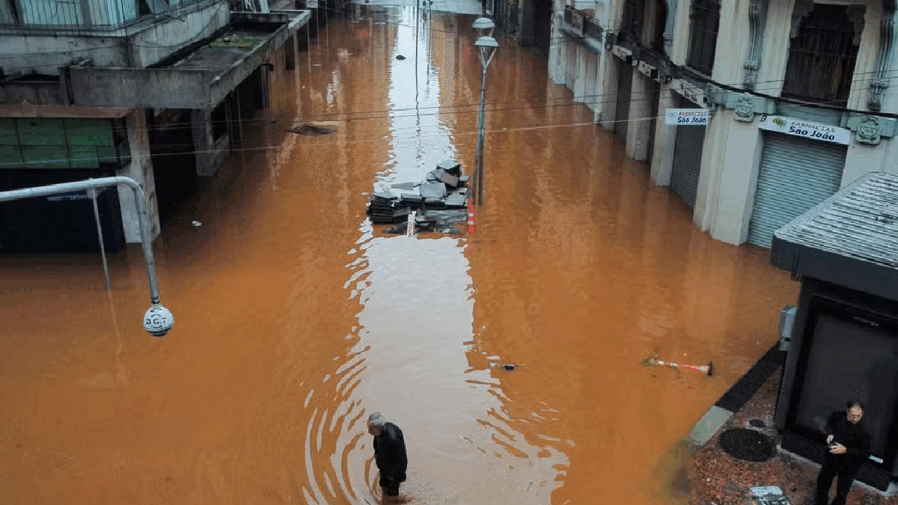

A tragédia que assolou o Rio Grande do Sul (RS) no último mês, com chuvas e enchentes que deixaram mais de uma centena de mortos e milhares de desabrigados, deve trazer impactos no Produto Interno Bruto (PIB) do Brasil nos próximos meses, dizem especialistas.
Embora os efeitos das cheias já sejam sentidos pela população gaúcha, a repercussão na economia nacional
ainda não começou a ser medida com clareza.
Os últimos dados do PIB, por exemplo, divulgados nesta terça-feira (4) pelo Instituto Brasileiro de
Geografia e Estatística (IBGE), medem apenas o crescimento da economia brasileira nos três primeiros
meses do ano, quando houve uma alta de 0,8%.
Para o segundo trimestre, a estimativa de analistas ouvidos pelo g1 é que a economia de todo o país
deixe de crescer — e há quem espere até mesmo uma retração da atividade para o período.
Parte desse cenário já pode ser visto em alguns indicadores. O Indicador de Incerteza da Economia
(IIE-Br), calculado pelo Instituto Brasileiro de Economia da Fundação Getulio Vargas (FGV Ibre), por
exemplo, subiu 6,4 pontos em maio, para 112,9 pontos, no maior nível desde março de 2023 (116,7 pontos).
"Uma análise de nuvem de palavras contidas nos textos que foram identificados como sinalizadores de incerteza econômica mostra um forte aumento no mês de citações ao Rio Grande do Sul, sugerindo um aumento de incertezas relacionadas ao desastre ambiental na região", diz Anna Carolina Gouveia, economista do FGV Ibre.
Os impactos do desastre no PIB
Para a XP Investimentos, os reflexos da tragédia no Rio Grande do Sul devem fazer o PIB do país ficar
próximo de zero no segundo trimestre. Antes, a projeção era de elevação de 0,5% para o período, afirma o
economista Rodolfo Margato.

O setor mais afetado pelas cheias no Rio Grande do Sul foi o da agropecuária, com um prejuízo estimado
em R$ 3,1 bilhões na agricultura e em R$ 272 milhões na pecuária até agora, segundo a Confederação
Nacional de Municípios (CNM).
A agropecuária gaúcha é importante para o Brasil, principalmente na produção de arroz: 70% de todo o
consumo do produto no país vem do Rio Grande do Sul.